Jarvis montre les pièces — planche de référence (F-237, itérations C et D)
F-237 / SF-237-05 → SF-237-14. Captures du banc (/jarvis-banc?banc=pieces-…, développement seulement) : contenus dessinés sur place, aucun réseau. Téléphone 390×844 et PC 1920×1080, rendu logiciel.
Visa du PO délégué pour cette vague (non bloquant) : les remarques de goût seront reprises au polissage suivant.
Galerie holographique (SF-237-05)
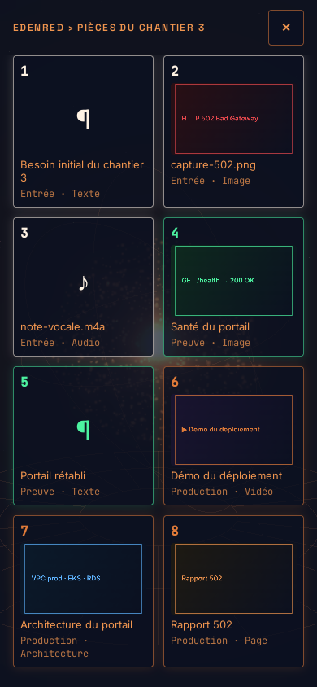
Éventail 3D depuis le chantier 3 — entrées, preuves (vert), productions (orange) · téléphone
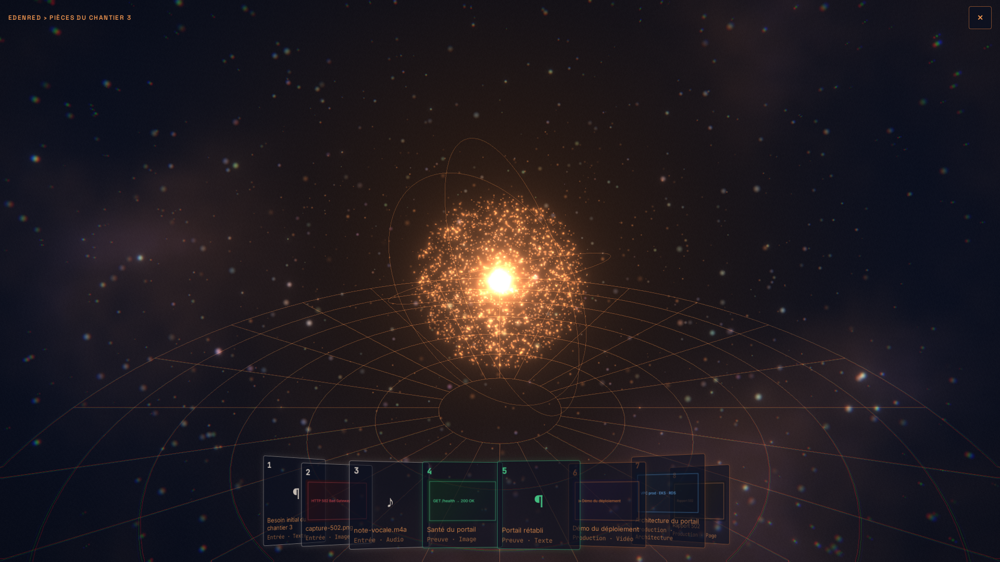
Éventail 3D depuis le chantier 3 — entrées, preuves (vert), productions (orange) · PCRepli 2D en grille — même réducteur, mêmes ordres · téléphone
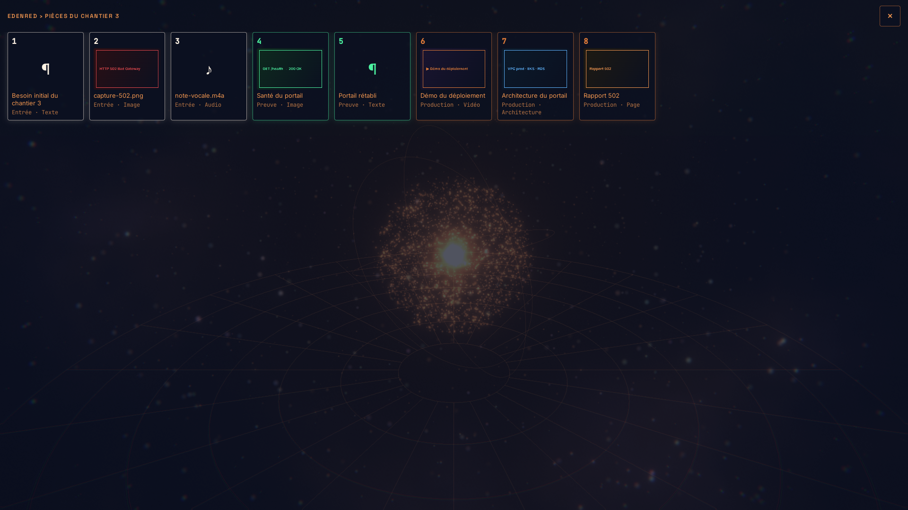
Repli 2D en grille — même réducteur, mêmes ordres · PC
Visionneuses (SF-237-06)
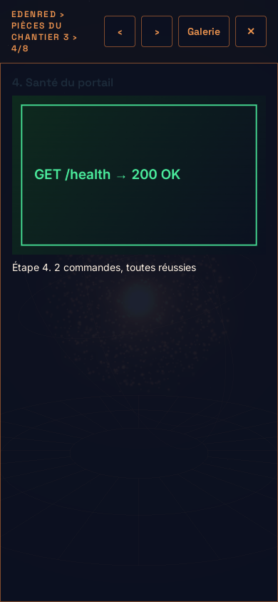
Preuve en héros — étape et commandes dites (§11) · téléphone
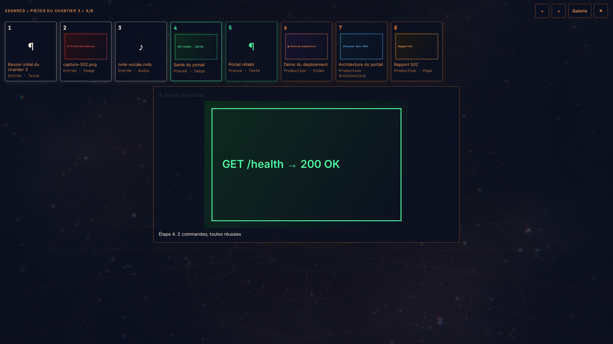
Preuve en héros — étape et commandes dites (§11) · PC
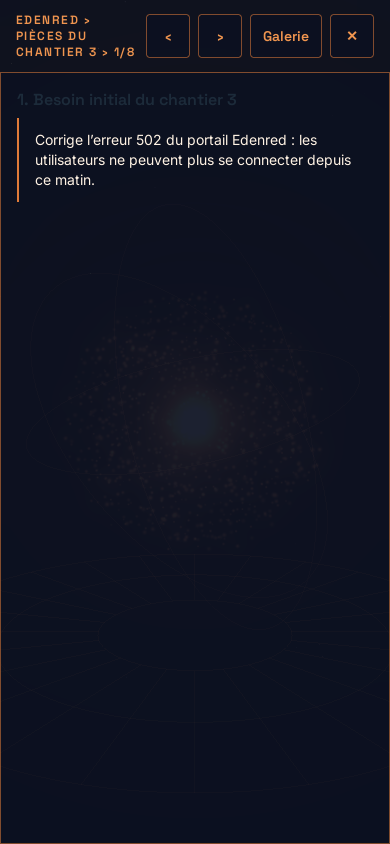
Besoin initial — carte texte, la parole d'origine · téléphone
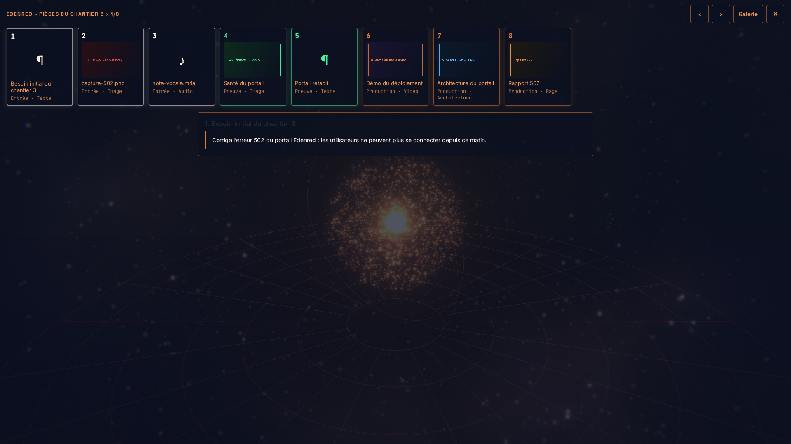
Besoin initial — carte texte, la parole d'origine · PC
Au-delà (SF-237-11)
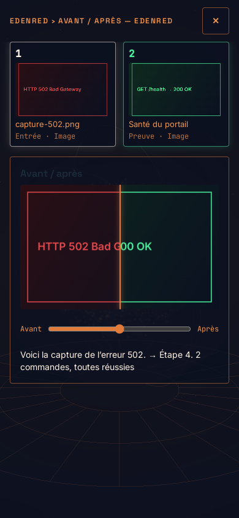
Avant / après — rideau glissant, capture d'erreur ↔ preuve · téléphone
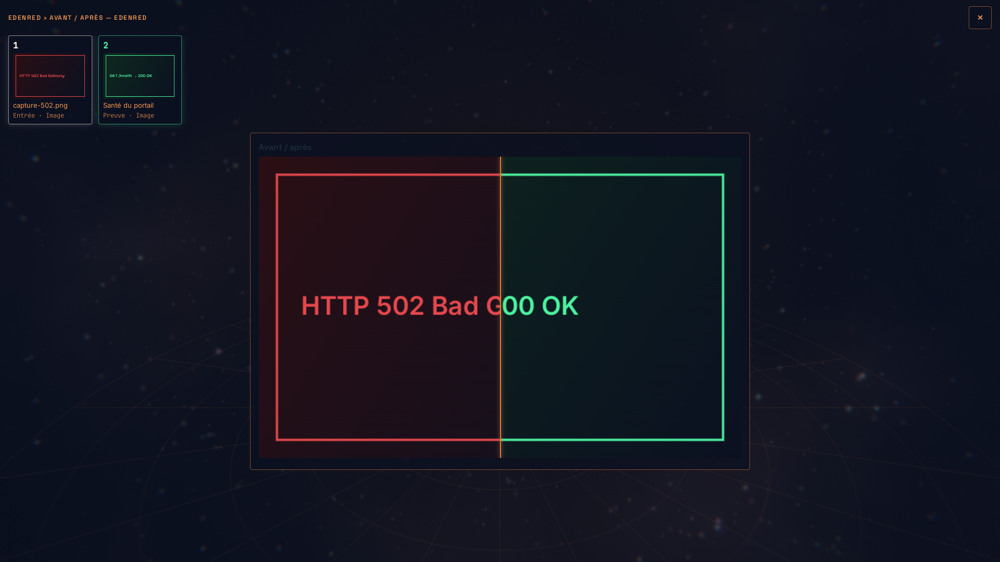
Avant / après — rideau glissant, capture d'erreur ↔ preuve · PC
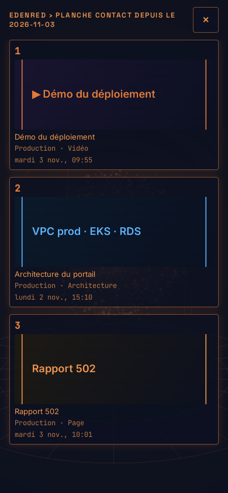
Planche contact du jour — productions en grille, date et heure · téléphone
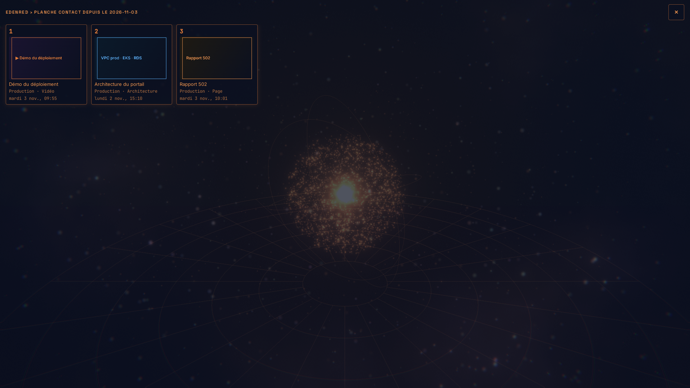
Planche contact du jour — productions en grille, date et heure · PC
Deux captures PC (héros image, avant / après) sont sous le seuil automatique de 2 % de pixels hors fond : le fond y est volontairement sombre (panneau de verre) ; contrôlées à l'œil.
i/s galerie ouverte (PC ≥ 60, téléphone ≥ 50 p50) : à relever en usage par la mesure RENDER (SF-237-14).